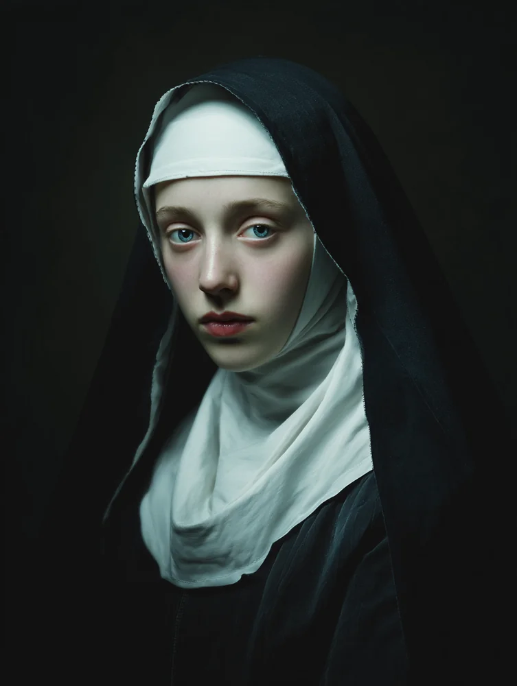
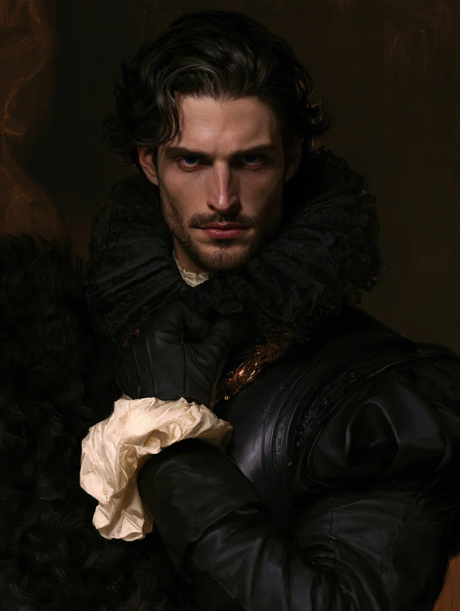
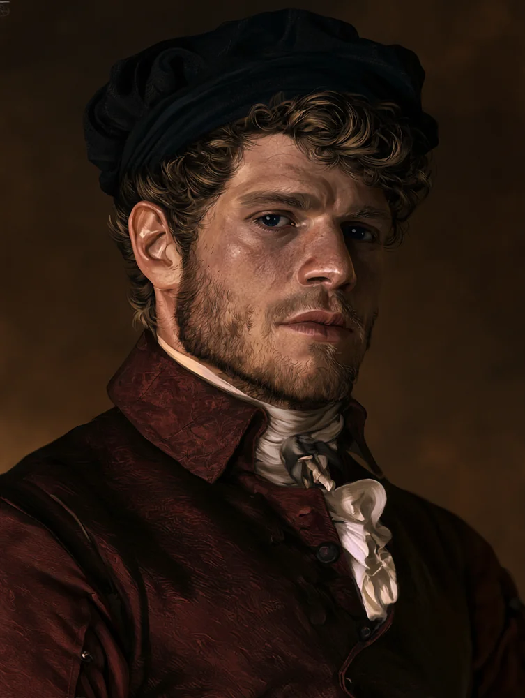
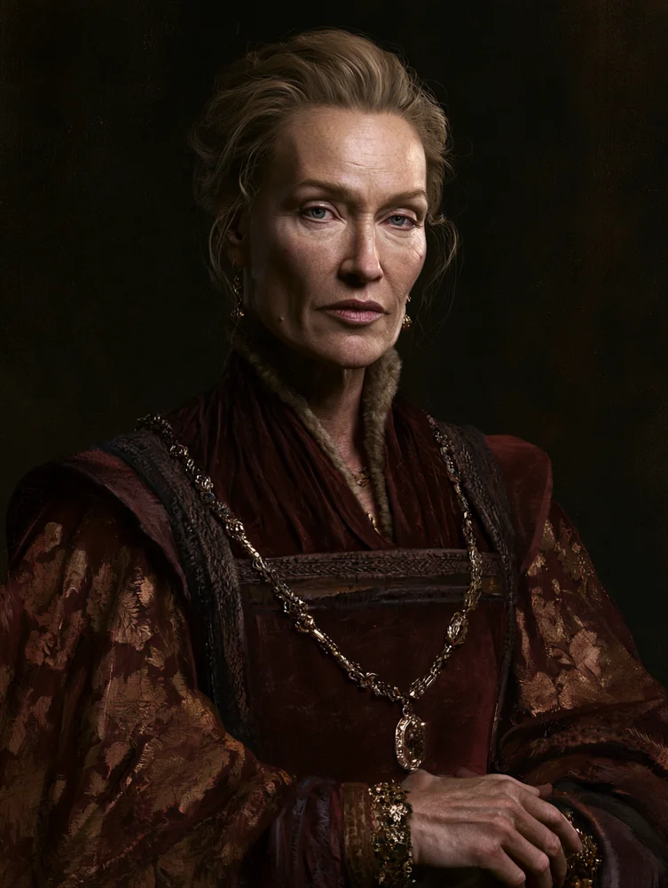
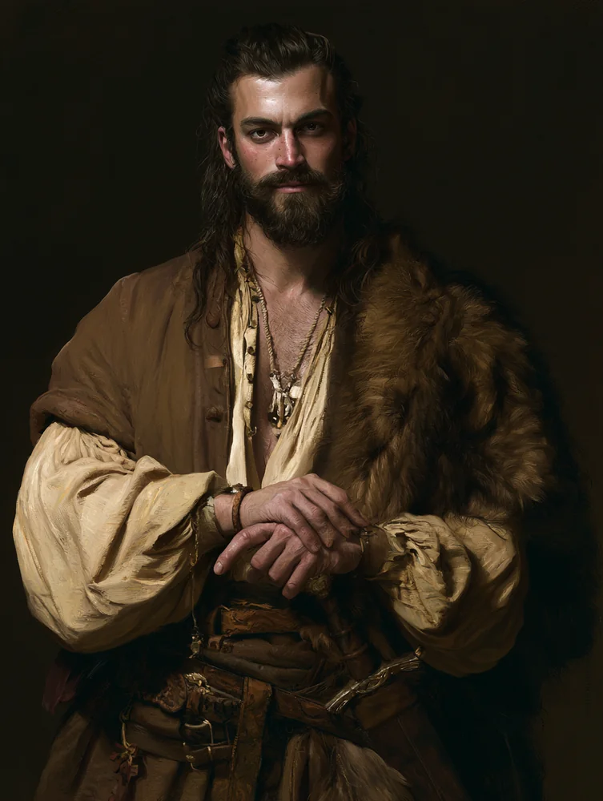

Home›Dramatis Personae
Dramatis Personae
The people the envoy has met — and one it lied about
Compiled from Sessions One and Two. Attributions marked presumed are the coterie's best reading, not established fact.

Ludan "a bolt of red" · Nosferatu
Stowaway · wanted by the Order of Absolution
A lid came off a box nobody had accounted for and a man sat up in it: patchwork leathers, a wooden mask with slits for the eyes and mouth and a mustache carved into it, a shock of red hair, and a box full of dead rodents. He had ridden the whole voyage unseen. Eustace couldn't get eye contact through the mask — which ruled out Dominate and annoyed him considerably — and later worked it out on politics: masks are courtesy in courts that contain Toreador, worn by the disfigured, and an unseen passenger points one way. Nosferatu — some of the coterie take his clan as known, though Tomisława herself does not.
Going overboard from the burning ship, he yelled fucking Catholics at the approaching riders and followed the frenzied pair into the surf. On the beach he gave Oscar a small wooden coin, well carved with a dancing fox — if you find yourself around Cambridge, ask for a bolt of red — and gave Eustace a knife: okay, you're forgiven. Then: if anyone asks, you didn't see me. And he was into the woods. Oscar read him as lying through his teeth about something, and let him go anyway.
He carries something very important. Sister Mary hears the intention more clearly than the details. The coterie has his trail — Cambridge, a bolt of red — and lied to a knightly order about knowing it.

Guarin of Jersey Commander of the Order · Kindred
The one she did not choose
He rode up, lifted his visor, apologised for the butchery, and produced a boarding ramp his men had been carrying for exactly this — then offered hospitality to "her cousin and herself," pets and servants included, looking at the wolf's bloody muzzle and saying yes anyway. Oscar read him as an entirely sincere man, properly carried, none of Oscar's own jadedness in him — and wearing ornate ceremonial armour that has seen far more pageantry than battle. Worked into it: sigils, not runic, of no school Méabh recognises. Someone with real power made it, or gave it to him.
Starving on the barn floor, Tomisława took his freely-offered wrist and drank. His blood is noticeably thicker than her own.
By her Bond Slave flaw, one drink is the whole bond. She did not run a risk; she acquired a regnant — roughly an hour after meeting him. He is a knight of an order that hunts her kind, he does not know what she is, and he does not know he holds her. She survived the barn only because he handed the one dangerous question to the nun, to whom she is not bound.

Mary, Sister of Sorrow Nun of the Order · Salubri
The healer she must keep her eyes down around
A nun in full habit who knowingly walked into a vampire's frenzy to end it — pure intentions on a critical read. She stepped past the thrashing, closed her eyes, laid a hand on Tomisława's forehead, gave back three willpower and ended it. Doing it, she bled: a red stain spreading through the white at her hairline — a third eye, not a wound — which she failed to cover in time, and from which Eustace drew his conclusion. The Lord speaks to me sometimes; the intention is clearer than the details.
In 1242 she is a hunted remnant of the clan the Tremere are busy exterminating and libelling as infernalists — prey to the same appetite that circles the koldun, from the other direction. She is also, mechanically, the single best ally in Christendom for a five-health glass cannon with Stake Bait. And she wears a crucifix, so Tomisława cannot look directly at her. The one person who could mend her is the one person she must keep her eyes down around.
The Order of Absolution
Knightly order & Road cult — the road to Heaven
A red Maltese cross on black. Sworn to protect pilgrims and holy sites — not crusaders — well known in the Isles and seated at Norwich, and known to be under Kindred influence, at least in Britain. They serve Theodore of Absolution, and through him the road to Heaven. Mithras is no Christian, but he is not their open enemy either. They did not come to the wreck for bandits: they were hunting a man with red hair, and possibly a mask.
Mithras
Prince of London
The being Tomisława chose — the first time she understood beings of his stature existed. At the debrief a door opened and the room filled with light that felt like sunlight and did not burn; the Beast recoiled on instinct, then grudgingly conceded it was in no danger. Everyone knelt without being told. There was the sound of metal meeting meat, and Thomas's head arrived in their peripheral vision. Rise, he said — heard the report that the envoy had revealed nothing, judged that his enemies had revealed themselves, said proceed, and left. The errand-boy phase is over.
Richard de Worde
Nosferatu · Mithras's spymaster
He refuses to hide his ruined face — melted, swollen flesh on open display above a nobleman's clothes, worn with evident pleasure, a standing insult to every Toreador in the court. His questions were gentle and were not gentle. He accepted Ludan as coincidence and bad luck, unconnected to the envoy's purpose. He has had eyes on Graf Światosław the entire time the coterie was abroad — and told Tomisława so, to her face, after she volunteered that her husband knew. He claimed the fault for the leak as his own before Mithras. Now this means we can start the real work.
Thomas
Mithras's man · gave them the mission
The one who handed the envoy its errand — and, it turned out, the leak. Beheaded in front of them by Mithras at the debrief. A small number of people had been given information about the mission; it was Thomas. But certain people is plural, and "the enemies revealing themselves" is doing a great deal of quiet work in that sentence.

Ostler Blackwell Lord of Shrewsbury · Kindred
The honourable old warrior on the march
He has held this fort for decades against the Welsh, through mortal wars that changed hands around him — which is why de Worde called Shrewsbury the soft first stop: Blackwell is the prince's man. In the hall he is a genial host and a genuinely dangerous one, a man of action who narrates his sieges while actually besting your sparring partner, and who cares, above nearly everything, for his dignitas. He grooms young Gareth toward the Embrace with the fastidious propriety of a Ventrue, and distanced himself, unprompted, from the crafting of flesh the moment Tomisława named her clan.
When Eustace called out his lapse of hospitality before the whole court, the predator behind his eyes weighed turning it to blood — and he swallowed it instead, and bowed, because a sword drawn on a snide boy only makes the boy's point. He will remember it.
His great trophy-head keeps leaving its mount and returning to the forest, angrier each time; it has cost him some of his best dogs and a houndmaster, and hangs on no wall. He has invited the coterie to a hunt for it, a night or two hence — entertainment and feast in one.

Gareth Arundel Young lord · ghoul promised the Embrace
The boy who wants to be a monster
The keep is nominally his family's; Blackwell rules it. Ghouled and made to wait years for a gift he plainly aches for, he had never seen a Cainite until the envoy arrived, and could not stop staring at Eustace before asking outright. Eustace was merciless — the child, the babe, the badly-made boy — and named his maker a bastard of a sire; Gareth, stung, could only say that to point it out was rude. Blackwell trains him in etiquette much as Tomisława trains Méabh. He is watchful, prickly, and now nursing a grudge.

Lady Henrietta Gareth's mother · mortal, aware
The quiet one who sees everything
Gareth's mother, entirely aware of what surrounds her son, and content to watch the whole evening in near-silence over a cup of wine — missing nothing. When her boy faltered, she cleared her throat and told the tale of Saint Winifred properly: the maiden beheaded by her spurned suitor Caradog, the spring risen where her head fell, and her life restored by Saint Beuno, whose relics later made the town's abbey a thriving pilgrim site. She agreed to lead Tomisława — veiled — to that abbey herself, after the hunt.

Dylan The Welshman · Kindred, commoner
The guest who speaks to wolves
A guest at Blackwell's court — Cainite and commoner both, "of no account twice over," as Tomisława put it while teaching Méabh how to be courteous to him anyway. He crouched into a wordless conversation with Scéalán, trading small animal sounds, and warmed to Méabh as the one soul in the hall who speaks his language — telling her, cheekily, that the wolf preferred his company. He prods the lord's stories along and keeps his own counsel: cagey about his age, and about his sire, which Méabh read as the short lineage of a Gangrel without his ever confirming it.